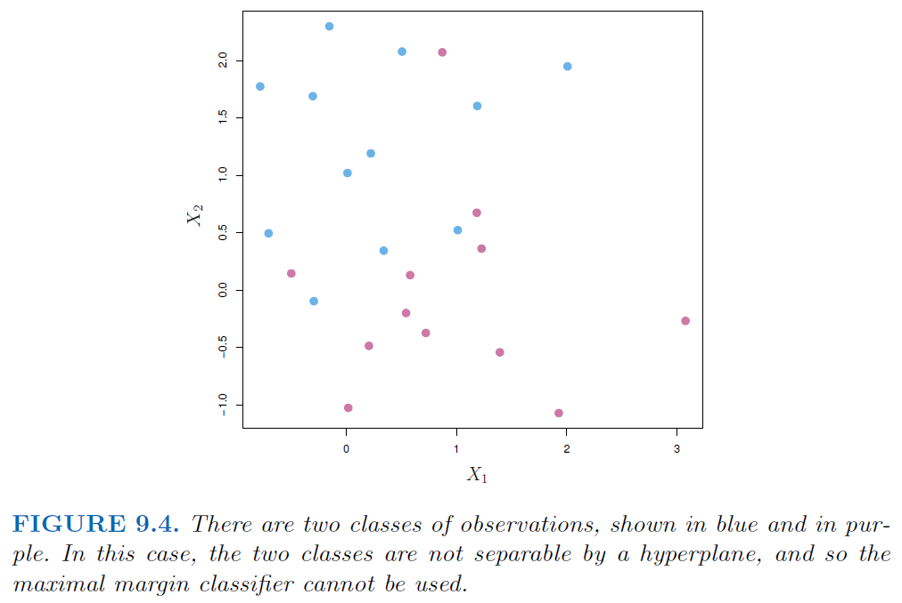
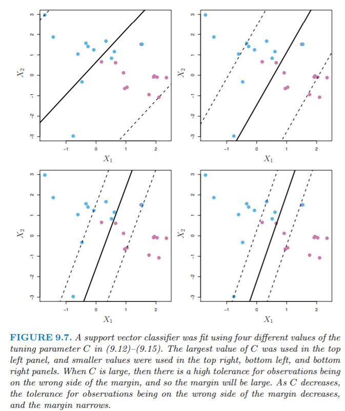
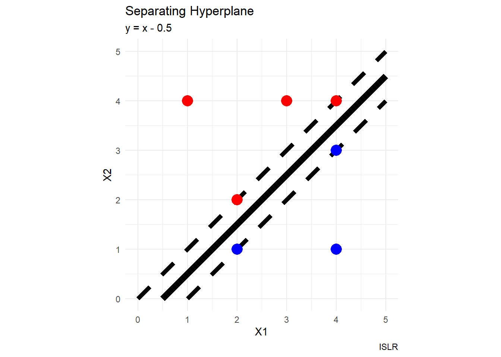
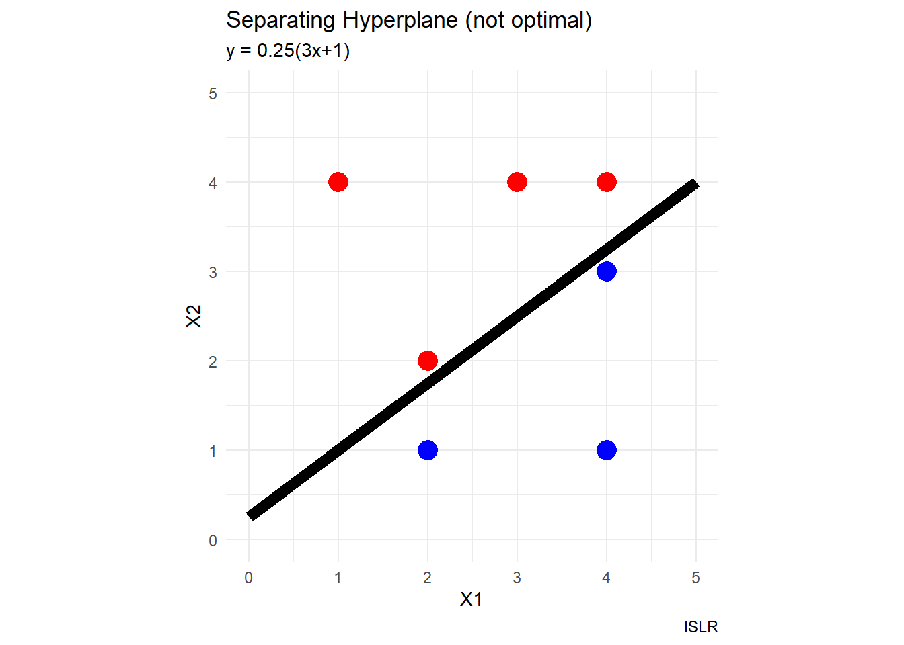

Support Vector Machines
Learning objectives:
- Implement a binary classification model using a maximal margin classifier.
- Implement a binary classification model using a support vector classifier.
- Implement a binary classification model using a support vector machine (SVM).
- Generalize SVM models to multi-class cases.
Support vector machine (SVM), an approach for classification developed in 1990. SVM is a generalizaion of classifiers methods, in particular:
- maximal margin classifier (it requires that the classes be separable by a linear boundary).
- support vector classifier
- support vector machine: binary classification setting with two classes
library("caTools")
library("dplyr")
library("e1071")
library("ggplot2")
library("ISLR")sessionInfo()R version 4.3.0 (2023-04-21 ucrt)
Platform: x86_64-w64-mingw32/x64 (64-bit)
Running under: Windows 10 x64 (build 19045)
Matrix products: default
locale:
[1] LC_COLLATE=English_United States.utf8
[2] LC_CTYPE=English_United States.utf8
[3] LC_MONETARY=English_United States.utf8
[4] LC_NUMERIC=C
[5] LC_TIME=English_United States.utf8
time zone: America/Los_Angeles
tzcode source: internal
attached base packages:
[1] stats graphics grDevices utils datasets methods base
other attached packages:
[1] ISLR_1.4 ggplot2_3.4.2 e1071_1.7-13 dplyr_1.1.2 caTools_1.18.2
loaded via a namespace (and not attached):
[1] vctrs_0.6.2 cli_3.6.1 knitr_1.43 rlang_1.1.1
[5] xfun_0.39 generics_0.1.3 jsonlite_1.8.4 glue_1.6.2
[9] colorspace_2.1-0 htmltools_0.5.5 scales_1.2.1 fansi_1.0.4
[13] rmarkdown_2.22 grid_4.3.0 munsell_0.5.0 evaluate_0.21
[17] tibble_3.2.1 bitops_1.0-7 fastmap_1.1.1 yaml_2.3.7
[21] lifecycle_1.0.3 compiler_4.3.0 htmlwidgets_1.6.2 pkgconfig_2.0.3
[25] rstudioapi_0.14 digest_0.6.31 R6_2.5.1 class_7.3-21
[29] tidyselect_1.2.0 utf8_1.2.3 pillar_1.9.0 magrittr_2.0.3
[33] withr_2.5.0 gtable_0.3.3 proxy_0.4-27 tools_4.3.0 Hyperplane

- A hyperplane is a \(p-1\)-dimensional flat subspace of a \(p\)-dimensional space. For example, in a 2-dimensional space, a hyperplane is a flat one-dimensional space: a line.
- (standard form) Definition of 2D hyperplane in 3D space: \[\beta_{0} + \beta_{1}X_{1} + \beta_{2}X_{2} + \beta_{3}X_{3}= 0\]
- (inner products) Any \(X\) s.t. \(X = (X_{1}, X_{2})^T\) for which the equation above is satisfied is a point on the hyperplane.
Additional resource: Deep AI
Separating Hyperplane
- Consider a matrix X of dimensions \(n*p\), and a \(y_{i} \in \{-1, 1\}\). We have a new observation, \(x^*\), which is a vector \(x^* = (x^*_{1}...x^*_{p})^T\) which we wish to classify to one of two groups.
- We will use a separating hyperplane to classify the observation.

- We can label the blue observations as \(y_{i} = 1\) and the pink observations as \(y_{i} = -1\).
- Thus, a separating hyperplane has the property s.t. \(\beta_{0} + \beta_{1}X_{i1} + \beta_{2}X_{i2} ... + \beta_{p}X_{ip} > 0\) if \(y_{i} =1\) and \(\beta_{0} + \beta_{1}X_{i1} + \beta_{2}X_{i2} ... + \beta_{p}X_{ip} < 0\) if \(y_{i} = -1\).
- In other words, a separating hyperplane has the property s.t. \(y_{i}(\beta_{0} + \beta_{1}X_{i1} + \beta_{2}X_{i2} ... + \beta_{p}X_{ip}) > 0\) for all \(i = 1...n\).
- Consider also the magnitude of \(f(x^*)\). If it is far from zero, we are confident in its classification, whereas if it is close to 0, then \(x^*\) is located near the hyperplane, and we are less confident about its classification.
Maximal Margin Classifier

- Generally, if data can be perfectly separated using a hyperplane, an infinite amount of such hyperplanes exist.
- An intuitive choice is the maximal margin hyperplane, which is the hyperplane that is farthest from the training data.
- We compute the perpendicular distance from each training observation to the hyperplane. The smallest of these distances is known as the margin.
- The maximal margin hyperplane is the hyperplane for which the margin is maximized. We can classify a test observation based on which side of the maximal margin hyperplane it lies on, and this is known as the maximal margin classifier.
- The maximal margin classifier classifies \(x^*\) based on the sign of \(f(x^*) = \beta_{0} + \beta_{1}x^*_{1} + ... + \beta_{p}x^*_{p}\).
- Note the 3 training observations that lie on the margin and are equidistant from the hyperplane. These are the support vectors (vectors in \(p\)-dimensional space; in this case \(p=2\)).
- They support the hyperplane because if their location was changed, the hyperplane would change.
- The maximal margin hyperplane depends on these observations, but not the others (unless the other observations were moved at or within the margin).
Mathematics of the MMC
- Consider constructing an MMC based on the training observations \(x_{1}...x_{n} \in \mathbb{R}^p\). This is the solution to the optimization problem:
\[\text{max}_{\beta_{0}...\beta_{p}, M} \space M\] \[\text{subject to } \sum_{j=1}^{p}\beta_{j}^2 = 1\] \[y_{i}(\beta_{0} + \beta_{1}X_{i1} + \beta_{2}X_{i2} ... + \beta_{p}X_{ip}) \geq M \quad \forall i = 1...n\]
- \(M\) is the margin, and the \(\beta\) coeffients are chosen to maximize \(M\).
- The constraint (3rd equation) ensures that each observation will be correctly classified, as long as M is positive.
- The 2nd and 3rd equations ensure that each data point is on the correct side of the hyperplane and at least M-distance away from the hyperplane.
- The perpendicular distance to the hyperplane is given by \(y_{i}(\beta_{0} + \beta_{1}x_{i1} + \beta_{2}x_{i2} ... + \beta_{p}x_{ip})\).
But what if our data is not separable by a linear hyperplane?

Individual data points greatly affect formation of the maximal margin classifier

Support Vector Classifiers
- We can’t always use a hyperplane to separate two classes.
- Even if such a classifier does exist, it’s not always desirable, due to overfitting or too much sensitivity to individual observations.
- Thus, it might be worthwhile to consider a classifier/hyperplane that misclassifies a few observations in order to improve classification of the remaining data points.
- The support vector classifier, a.k.a the soft margin classifier, allows some training data to be on the wrong side of the margin or even the hyperplane.
Mathematics of the SVC
- The SVC classifies a test observation based on which side of the hyperplane it lies.
\[\text{max}_{\beta_{0}...\beta_{p}, \epsilon_{1}...\epsilon_{n}, M} \space M\] \[\text{subject to } \sum_{j=1}^{p}\beta_{j}^2 = 1\] \[y_{i}(\beta_{0} + \beta_{1}X_{i1} + \beta_{2}X_{i2} ... + \beta_{p}X_{ip}) \geq M(1 - \epsilon_{i})\] \[\epsilon_{i} \geq 0, \quad \sum_{i=1}^{n}\epsilon_{i} \leq C\]
\(C\) is a nonnegative tuning parameter, typically chosen through cross-validation, and can be thought of as the budget for margin violation by the observations.
The \(\epsilon_{i}\) are slack variables that allow individual observations to be on the wrong side of the margin or hyperplane. The \(\epsilon_{i}\) indicates where the \(i^{\text{th}}\) observation is located with regards to the margin and hyperplane.
- If \(\epsilon_{i} = 0\), the observation is on the correct side of the margin.
- If \(\epsilon_{i} > 0\), the observation is on the wrong side of margin
- If \(\epsilon_{i} > 1\), the observation is on the wrong side of the hyperplane.
Since \(C\) constrains the sum of the \(\epsilon_{i}\), it determines the number and magnitude of violations to the margin. If \(C=0\), there is no margin for violation, thus all the \(\epsilon_{1},...,\epsilon_{n} = 0\).
Note that if \(C>0\), no more than \(C\) observations can be on wrong side of hyperplane, since in these cases \(\epsilon_{i} > 1\).
Tuning Parameter

A property of the classifier is that only data points which lie on or violate the margin will affect the hyperplane. These data points are known as support vectors.
\(C\) controls the bias-variance tradeoff of the classifier.
- When \(C\) is large: high bias, low variance
- When \(C\) is small: low bias, high variance
The property of the SVC solely being dependent on certain observations in classification differs from other classification methods such as LDA (depends on mean of all observations in each class, as well as each class’s covariance matrix using all observations).
However, logistic regression is more similar to SVC in that it has low sensitivity to observations far from the decision boundary.
Nonlinear Classification
- Many decision boundaries are not linear.
- We could fit an SVC to the data using \(2p\) features (in the case of \(p\) features and using a quadratic form).
\[X_{1}, X_{1}^{2}, \quad X_{2}, X_{2}^{2}, \quad\cdots, \quad X_{p}, X_{p}^{2}\]
\[\text{max}_{\beta_{0},\beta_{11},\beta_{12},\dots,\beta_{p1},\beta_{p2} \epsilon_{1},\dots,\epsilon_{n}, M} \space M\] \[\text{subject to } y_{i}\left(\beta_{0} + \sum_{j=1}^{p} \beta_{ji}x_{ji} + \sum_{j=1}^{p} \beta_{ji}x_{ji}^{2}\right) \geq M(1 - \epsilon_{i})\]
\[\epsilon_{i} \geq 0, \quad \sum_{i=1}^{n}\epsilon_{i} \leq C, \quad \sum_{j=1}^{p}\sum_{k=1}^{2} \beta_{jk}^{2} = 1\]
- Note that in the enlarged feature space (here, with the quadratic terms), the decision boundary is linear. But in the original feature space, it is quadratic \(q(x) = 0\) (in this example), and generally the solutions are not linear.
- One could also include interaction terms, higher degree polynomials, etc., and thus the feature space could enlarge quickly and entail unmanageable computations.
Support Vector Machines
- The SVM is an extension of the SVC which results from using kernels to enlarge the feature space. A kernel is a function that quantifies the similarity of two data points.
- Essentially, we want to enlarge the feature space to make use of a nonlinear decision boundary, while avoiding getting bogged down in unmanageable calculations.
- The solution to the SVC problem in the SVM context involves only the inner products (AKA dot products) of the observations.
\[\langle x_{i} \; , x_{i'} \; \rangle = \sum_{j=1}^{p}x_{ij}x_{i'j}\]
In the context of SVM, the linear support vector classifier is as follows:
\[f(x) = \beta_{0} + \sum_{i=1}^{n}\alpha_{i}\langle \; x, x_i\; \rangle\]
- To estimate the \(n\) \(\alpha_{i}\) coefficients and \(\beta_{0}\), we only need the \(\binom{n}{2}\) inner products between all pairs of training observations.
- Note that in the equation above, in order to compute \(f(x)\) for the new point \(x\), we need the inner product between the new point and all the training observations. However, \(\alpha_{i} = 0\) for all points that are not on or within the margin (i.e., points that are not support vectors). So we can rewrite the equation as follows, where \(S\) is the set of support point indices:
\[f(x) = \beta_{0} + \sum_{i \in S}\alpha_{i}\langle \; x, x_{i} \; \rangle\]
- Replace every inner product with \(K(x_{i}, x_{i'})\), where \(K\) is a kernel function.
- \(K(x_{i}, x_{i'}) = \sum_{j=1}^{p}x_{ij}x_{i'j}\) is the SVC and is known as a linear kernel since it is linear in the features.
- One could also have kernel functions of the following form, where \(d\) is a positive integer:
\[K(x_{i}, x_{i'}) = \left(1 + \sum_{j=1}^{p}x_{ij}x_{i'j}\right)^d\]
- This will lead to a much more flexible decision boundary, and is basically fitting an SVC in a higher-dimensional space involving polynomials of degree \(d\), instead of the original feature space.
- When an SVC is combined with a nonlinear kernel as above, the result is a support vector machine.
\[f(x) = \beta_{0} + \sum_{i \in S}\alpha_{i}K(x, x_{i})\]
Radial Kernels

- There are other options besides polynomial kernel functions, and a popular one is a radial kernel.
\[K(x, x_{i}) = \text{exp}\left(-\gamma\sum_{j=1}^p(x_{ij} - x_{i'j})^2\right), \quad \gamma > 0\]
- For a given test observations \(x^*\), if it is far from \(x_{i}\), then \(K(x^*, x_{i})\) will be small given the negative \(\gamma\) and large \(\sum_{j=1}^p(x^*_{j} - x_{ij})^2)\).
- Thus, \(x_{i}\) will play little role in \(f(x^*)\).
- The predicted class for \(x^*\) is based on the sign of \(f(x^*)\), so training observations far from a given test point play little part in determining the label for a test observation.
- The radial kernel therefore exhibits local behavior with respect to other observations.
SVM with Radial Kernels

- The advantage of using a kernel rather than simply enlarging feature space is computational, since it is only necessary to compute \(\binom{n}{2}\) kernel functions.
- For radial kernels, the feature space is implicit and infinite dimensional, so we could not do the computations in such a space anyways.
More than Two Classes
- The concept of separating hyperplanes does not extend naturally to more than two classes, but there are some ways around this.
- A one-versus-one approach constructs \(K \choose 2\) SVMs, where \(K\) is the number of classes. An observation is classified to each of the \(K \choose 2\) classes, and the number of times it appears in each class is counted.
- The \(k^\text{th}\) class might be coded as +1 versus the \((k')^\text{th}\) class is coded as -1.
- The data point is classified to the class for which it was most often assigned in the pairwise classifications.
- Another option is one-versus-all classification. This can be useful when there are a lot of classes.
- \(K\) SVMs are fitted, and one of the K classes to the remaining \(K-1\) classes.
- \(\beta_{0k}...\beta_{pk}\) denotes the parameters that results from constructing an SVM comparing the \(k\)th class (coded as +1) to the other classes (-1).
- Assign test observation \(x^*\) to the class \(k\) for which \(\beta_{0k} + ... + \beta_{pk}x^*_{p}\) is largest.
Lab: Support Vector Classifier
library("tidymodels")
library("kernlab") # We'll use the plot method from this.set.seed(1)
sim_data <- matrix(
rnorm (20 * 2),
ncol = 2,
dimnames = list(NULL, c("x1", "x2"))
) %>%
as_tibble() %>%
mutate(
y = factor(c(rep(-1, 10), rep(1, 10)))
) %>%
mutate(
x1 = ifelse(y == 1, x1 + 1, x1),
x2 = ifelse(y == 1, x2 + 1, x2)
)
sim_data %>%
ggplot() +
aes(x1, x2, color = y) +
geom_point() +
labs(title = "Trying to make a hyperplane classifier",
subtitle = "simulated data",
caption = "R4DS book club") +
theme_minimal()# generated this using their process then saved it to use here.
test_data <- readRDS("data/09-testdat.rds") %>%
rename(x1 = x.1, x2 = x.2)
test_data %>%
ggplot() +
aes(x1, x2, color = y) +
geom_point() +
labs(title = "Trying to make a hyperplane classifier",
subtitle = "simulated data",
caption = "R4DS book club") +
theme_minimal()We create a spec for a model, which we’ll update throughout this lab with different costs.
svm_linear_spec <- svm_poly(degree = 1) %>%
set_mode("classification") %>%
set_engine("kernlab", scaled = FALSE)Then we do a couple fits with manual cost.
svm_linear_fit_10 <- svm_linear_spec %>%
set_args(cost = 10) %>%
fit(y ~ ., data = sim_data)
svm_linear_fit_10
svm_linear_fit_10 %>%
extract_fit_engine() %>%
plot()
svm_linear_fit_01 <- svm_linear_spec %>%
set_args(cost = 0.1) %>%
fit(y ~ ., data = sim_data)
svm_linear_fit_01
svm_linear_fit_01 %>%
extract_fit_engine() %>%
plot()
svm_linear_fit_001 <- svm_linear_spec %>%
set_args(cost = 0.01) %>%
fit(y ~ ., data = sim_data)
svm_linear_fit_001
svm_linear_fit_001 %>%
extract_fit_engine() %>%
plot()Tuning
Let’s find the best cost.
svm_linear_wf <- workflow() %>%
add_model(
svm_linear_spec %>% set_args(cost = tune())
) %>%
add_formula(y ~ .)
set.seed(1234)
sim_data_fold <- vfold_cv(sim_data, strata = y)
param_grid <- grid_regular(cost(), levels = 10)
# Our grid isn't identical to the book, but it's close enough.
param_gridtune_res <- tune_grid(
svm_linear_wf,
resamples = sim_data_fold,
grid = param_grid
)
# We ran this locally and then saved it so everyone doesn't need to wait for
# this to process each time they build the book.
# saveRDS(tune_res, "data/09-tune_res.rds")autoplot(tune_res)Tune can pull out the best result for us.
best_cost <- select_best(tune_res, metric = "accuracy")
svm_linear_final <- finalize_workflow(svm_linear_wf, best_cost)
svm_linear_fit <- svm_linear_final %>% fit(sim_data)
svm_linear_fit %>%
augment(new_data = test_data) %>%
conf_mat(truth = y, estimate = .pred_class)\[\text{accuracy} = \frac{9 + 8}{9 + 1 + 2 + 8} = 0.85\]
svm_linear_fit_001 %>%
augment(new_data = test_data) %>%
conf_mat(truth = y, estimate = .pred_class)\[\text{accuracy} = \frac{11 + 3}{11 + 6 + 0 + 3} = 0.70\]
Linearly separable data
sim_data_sep <- sim_data %>%
mutate(
x1 = ifelse(y == 1, x1 + 0.5, x1),
x2 = ifelse(y == 1, x2 + 0.5, x2)
)
sim_data_sep %>%
ggplot() +
aes(x1, x2, color = y) +
geom_point()
svm_fit_sep_1e5 <- svm_linear_spec %>%
set_args(cost = 1e5) %>%
fit(y ~ ., data = sim_data_sep)
svm_fit_sep_1e5
svm_fit_sep_1e5 %>%
extract_fit_engine() %>%
plot()
svm_fit_sep_1 <- svm_linear_spec %>%
set_args(cost = 1) %>%
fit(y ~ ., data = sim_data_sep)
svm_fit_sep_1
svm_fit_sep_1 %>%
extract_fit_engine() %>%
plot()
test_data_sep <- test_data %>%
mutate(
x1 = ifelse(y == 1, x1 + 0.5, x1),
x2 = ifelse(y == 1, x2 + 0.5, x2)
)
svm_fit_sep_1e5 %>%
augment(new_data = test_data_sep) %>%
conf_mat(truth = y, estimate = .pred_class)\[\text{accuracy} = \frac{9 + 8}{8 + 1 + 2 + 8} = 0.85\]
svm_fit_sep_1 %>%
augment(new_data = test_data_sep) %>%
conf_mat(truth = y, estimate = .pred_class)\[\text{accuracy} = \frac{9 + 9}{9 + 0 + 2 + 9} = 0.90\]
Exercises (Conceptual)
ggplot setup
N <- 50 #resolution
x <- seq(-10, 10, length.out = N)
y <- seq(-10, 10, length.out = N)
df <- expand.grid(x,y)
colnames(df) <- c("xval", "yval")
euclidean_distance <- function(x1, y1, x2, y2){
# computes the Euclidean distance between (x1, y1) and (x2, y2)
sqrt( (x2 - x1)^2 + (y2 - y1)^2 )
}
accuracy_calculation <- function(confusion_matrix){
# computes the accuracy revealed by a 2x2 confusion matrix
Q <- confusion_matrix
(Q[1,1] + Q[2,2]) / (Q[1,1] + Q[1,2] + Q[2,1] + Q[2,2])
}Conceptual Task 1
This problem involves hyperplanes in two dimensions.
- blue: \(1 + 3X_{1} - X_{2} > 0\)
- red: \(1 + 3X_{1} - X_{2} < 0\)
code
df1 <- df |>
# math function
mutate(shade = ifelse(yval > 3*xval + 1, "blue", "red"))
df1 |>
ggplot() +
# shaded regions
geom_point(aes(x = xval, y = yval, color = shade),
alpha = 0.5) +
scale_color_identity() +
# axes
geom_segment(aes(x = -10, y = 0, xend = 10, yend = 0),
alpha = 0.25, color = "gray75", linewidth = 2) +
geom_segment(aes(x = 0, y = -10, xend = 0, yend = 10),
alpha = 0.25, color = "gray75", linewidth = 2) +
# main line
geom_segment(aes(x = -(11/3), y = -10, xend = 3, yend = 10),
color = "black", linewidth = 3) +
# customization
coord_equal() +
labs(title = "Separating Hyperplane",
subtitle = "y = 3x + 1",
caption = "ISLR",
x = "X1", y = "X2") +
theme_minimal()- blue: \(-2 + X_{1} + 2X_{2} > 0\)
- red: \(-2 + X_{1} + 2X_{2} < 0\)
code
df1b <- df |>
# math function
mutate(shade = ifelse(yval > 1 - 0.5*xval, "blue", "red"))
df1b |>
ggplot() +
# shaded regions
geom_point(aes(x = xval, y = yval, color = shade),
alpha = 0.5) +
scale_color_identity() +
# axes
geom_segment(aes(x = -10, y = 0, xend = 10, yend = 0),
alpha = 0.25, color = "gray75", linewidth = 2) +
geom_segment(aes(x = 0, y = -10, xend = 0, yend = 10),
alpha = 0.25, color = "gray75", linewidth = 2) +
# main line
geom_segment(aes(x = -10, y = 6, xend = 10, yend = -4),
color = "black", linewidth = 3) +
# customization
coord_equal() +
labs(title = "Separating Hyperplane",
subtitle = "y = 1 - 0.5x",
caption = "ISLR",
x = "X1", y = "X2") +
theme_minimal()
Conceptual Task 2
We now investigate a non-linear decision boundary.
- blue: \((1 + X_{1})^{2} + (2 - X_{2})^{2} > 4\)
- red: \((1 + X_{1})^{2} + (2 - X_{2})^{2} < 4\)
code
df2 <- df |>
# math function
mutate(shade = ifelse(euclidean_distance(xval, yval, -1, 2) > 4,
"blue", "red"))
df2 |>
ggplot() +
# shaded regions
geom_point(aes(x = xval, y = yval, color = shade),
alpha = 0.5) +
scale_color_identity() +
# axes
geom_segment(aes(x = -10, y = 0, xend = 10, yend = 0),
alpha = 0.25, color = "gray75", linewidth = 2) +
geom_segment(aes(x = 0, y = -10, xend = 0, yend = 10),
alpha = 0.25, color = "gray75", linewidth = 2) +
# customization
coord_equal() +
labs(title = "Separating Hyperplane",
subtitle = "(x+1)^2 + (y-2)^2 = 4",
caption = "ISLR",
x = "X1", y = "X2") +
theme_minimal()
- To what class is the observation (0, 0) classified? (−1, 1)? (2, 2)? (3, 8)?
ifelse(euclidean_distance(0, 0, -1, 2) > 4, "blue", "red")[1] "red"ifelse(euclidean_distance(-1, 1, -1, 2) > 4, "blue", "red")[1] "red"ifelse(euclidean_distance(2, 2, -1, 2) > 4, "blue", "red")[1] "red"ifelse(euclidean_distance(3, 8, -1, 2) > 4, "blue", "red")[1] "blue"- While the decision boundary
\[(1 + X_{1})^{2} + (2 - X_{2})^{2} = 4\]
is not linear in \(X_{1}\) and \(X_{2}\), it is linear in terms of \(X_{1}\), \(X_{1}^{2}\), \(X_{2}\), \(X_{2}^{2}\)
\[\beta_{0} + \beta_{1}X_{1} + \beta_{2}X_{2} + \beta_{3}X_{1}^{2} + \beta_{4}X_{2}^{2} = 0\]
with \(\beta_{0} = 1\), \(\beta_{1} = 2\), \(\beta_{2} = -4\), \(\beta_{3} = 1\), and \(\beta_{4} = 1\).
Conceptual Task 3
obs <- 1:7
xvals <- c(3,2,4,1,2,4,4)
yvals <- c(4,2,4,4,1,3,1)
class_label <- c("Red", "Red", "Red", "Red", "Blue", "Blue", "Blue")
df3 <- data.frame(obs, xvals, yvals, class_label)
df3 obs xvals yvals class_label
1 1 3 4 Red
2 2 2 2 Red
3 3 4 4 Red
4 4 1 4 Red
5 5 2 1 Blue
6 6 4 3 Blue
7 7 4 1 Blue- We are given \(n = 7\) observations in \(p = 2\) dimensions. For each observation, there is an associated class label.
code
df3 |>
ggplot() +
geom_point(aes(x = xvals, y = yvals, color = class_label),
size = 5) +
coord_equal() +
scale_color_identity() +
labs(title = "Where to Draw the Separating Hyperplane?",
# subtitle = "y = x - 0.5",
caption = "ISLR",
x = "X1", y = "X2") +
theme_minimal() +
xlim(0,5) + ylim(0,5)- Sketch the optimal separating hyperplane, and provide the equation for this hyperplane
code
df3 |>
ggplot() +
# separating hyperplane
geom_segment(aes(x = 0.5, y = 0, xend = 5, yend = 4.5),
color = "black", linetype = 1, linewidth = 3) +
# margins
geom_segment(aes(x = 0, y = 0, xend = 5, yend = 5),
color = "black", linetype = 2, linewidth = 2) +
geom_segment(aes(x = 1, y = 0, xend = 5, yend = 4),
color = "black", linetype = 2, linewidth = 2) +
geom_point(aes(x = xvals, y = yvals, color = class_label),
size = 5) +
coord_equal() +
scale_color_identity() +
labs(title = "Separating Hyperplane",
subtitle = "y = x - 0.5",
caption = "ISLR",
x = "X1", y = "X2") +
theme_minimal() +
xlim(0,5) + ylim(0,5)
- blue: \(0.5 - X_{1} + X_{2} < 0\)
- red: \(0.5 - X_{1} + X_{2} > 0\)
- maximal margin in indicated by the dashed lines, with margin
\[M = \frac{0.5}{\sqrt{2}} \approx 0.3536\] (e) Indicate the support vectors for the maximal margin classifier.
code
df3e <- df3 |>
mutate(supp_vec = ifelse(obs %in% c(2,3,5,6),
"support vector", "other data"))
df3e$supp_vec <- factor(df3e$supp_vec,
levels = c("support vector", "other data"))
df3e |>
ggplot() +
# separating hyperplane
geom_segment(aes(x = 0.5, y = 0, xend = 5, yend = 4.5),
color = "black", linetype = 1, linewidth = 3) +
# margins
geom_segment(aes(x = 0, y = 0, xend = 5, yend = 5),
color = "black", linetype = 2, linewidth = 2) +
geom_segment(aes(x = 1, y = 0, xend = 5, yend = 4),
color = "black", linetype = 2, linewidth = 2) +
geom_point(aes(x = xvals, y = yvals, color = supp_vec),
size = 5) +
coord_equal() +
scale_color_manual(values = c("purple", "gray50")) +
labs(title = "Separating Hyperplane",
subtitle = "y = x - 0.5",
caption = "ISLR",
x = "X1", y = "X2") +
theme_minimal() +
xlim(0,5) + ylim(0,5)
Argue that a slight movement of the seventh observation would not affect the maximal margin hyperplane.
Sketch a hyperplane that is not the optimal separating hyperplane, and provide the equation for this hyperplane.
code
df3 |>
ggplot() +
# separating hyperplane
geom_segment(aes(x = 0, y = 1/4, xend = 5, yend = 16/4),
color = "black", linetype = 1, linewidth = 3) +
geom_point(aes(x = xvals, y = yvals, color = class_label),
size = 5) +
coord_equal() +
scale_color_identity() +
labs(title = "Separating Hyperplane (not optimal)",
subtitle = "y = 0.25(3x+1)",
caption = "ISLR",
x = "X1", y = "X2") +
theme_minimal() +
xlim(0,5) + ylim(0,5)
- Draw an additional observation on the plot so that the two classes are no longer separable by a hyperplane.
code
new_dot <- data.frame(obs = 8, xvals = 0, yvals = 5, class_label = "blue")
df3h <- rbind(df3, new_dot)
df3h |>
ggplot() +
geom_point(aes(x = xvals, y = yvals, color = class_label),
size = 5) +
coord_equal() +
scale_color_identity() +
labs(title = "Where to Draw the Separating Hyperplane?",
subtitle = "new data at (0,5)",
caption = "ISLR",
x = "X1", y = "X2") +
theme_minimal() +
xlim(0,5) + ylim(0,5)Exercises (Applied)
Mostly transcibed from OnMee’s solutions.
Applied Task 4
Generate a simulated two-class data set with 100 observations and two features in which there is a visible but non-linear separation between the two classes. Show that in this setting, a support vector machine with a polynomial kernel (with degree greater than 1) or a radial kernel will outperform a support vector classifier on the training data. Which technique performs best on the test data? Make plots and report training and test error rates in order to back up your assertions.
# Generating a dataset with visible non-linear separation.
set.seed(3)
x=matrix(rnorm(100*2), ncol=2)
y=c(rep(-1,70), rep(1,30))
x[1:30,]=x[1:30,]+3.3
x[31:70,]=x[31:70,]-3
dat=data.frame(x=x, y=as.factor(y))
# Training and test sets.
sample.data = sample.split(dat$x.1, SplitRatio = 0.7)
train.set = subset(dat, sample.data==T)
test.set = subset(dat, sample.data==F)
plot(x,col=(2-y), xlab='X1', ylab='X2', main='Dataset with non-linear separation')Linear Kernel
# Best model.
set.seed(3)
tune.out=tune(svm,
y ~ .,
data = train.set,
kernel='linear',
ranges=list(cost=c(0.001,0.01,0.1,1,5,10,100)))
bestmod=tune.out$best.model
plot(bestmod, dat)# Predictions on training set.
ypred=predict(bestmod, train.set)
table_4_train = table(predict=ypred, truth=train.set$y)
print(table_4_train) truth
predict -1 1
-1 50 20
1 0 0print(paste0("Accuracy: ",
round(100*accuracy_calculation(table_4_train), 2),
" percent"))[1] "Accuracy: 71.43 percent"#Predictions on the test set.
ypred=predict(bestmod, test.set)
table_4_test = table(predict=ypred, truth=test.set$y)
print(table_4_test) truth
predict -1 1
-1 20 10
1 0 0print(paste0("Accuracy: ",
round(100*accuracy_calculation(table_4_test), 2),
" percent"))[1] "Accuracy: 66.67 percent"Radial Kernel
# Best model using cross validaitonon a set of values for cost and gamma.
set.seed(3)
tune.out=tune(svm, y~., data=train.set, kernel='radial',
ranges=list(cost=c(0.1,1,10,100,1000),gamma=c(0.5,1,2,3,4)))
bestmod = tune.out$best.model
plot(bestmod, train.set)# Predictions on training set.
ypred=predict(bestmod, train.set)
table_4_train = table(predict=ypred, truth=train.set$y)
print(table_4_train) truth
predict -1 1
-1 50 0
1 0 20print(paste0("Accuracy: ",
round(100*accuracy_calculation(table_4_train), 2),
" percent"))[1] "Accuracy: 100 percent"#Predictions on the test set.
ypred=predict(bestmod, test.set)
table_4_test = table(predict=ypred, truth=test.set$y)
print(table_4_test) truth
predict -1 1
-1 20 0
1 0 10print(paste0("Accuracy: ",
round(100*accuracy_calculation(table_4_test), 2),
" percent"))[1] "Accuracy: 100 percent"Applied Task 5
We have seen that we can fit an SVM with a non-linear kernel in order to perform classification using a non-linear decision boundary.We will now see that we can also obtain a non-linear decision boundary by performing logistic regression using non-linear transformations of the features.
- Generate a data set with n = 500 and p = 2, such that the observations belong to two classes with a quadratic decision boundary between them.
x1 <- runif (500) - 0.5
x2 <- runif (500) - 0.5
y <- 1 * (x1^2 - x2^2 > 0)
df <- data.frame(x1=x1, x2=x2, y=as.factor(y))- Plot the observations, colored according to their class labels. Your plot should display X1 on the x-axis, and X2 on the yaxis.
plot(x1,x2,col = (2 - y))- Fit a logistic regression model to the data, using X1 and X2 as predictors.
glm.fit = glm(y~x1+x2, data=df, family = 'binomial')
# Predictions
glm.probs = predict(glm.fit, newdata=df, type = 'response')
glm.preds = rep(0,500)
glm.preds[glm.probs>0.50] = 1
table_5_c <- table(preds=glm.preds, truth=df$y)
print(table_5_c) truth
preds 0 1
0 24 21
1 214 241print(paste0("Accuracy: ",
round(100*accuracy_calculation(table_5_c), 2),
" percent"))[1] "Accuracy: 53 percent"- Apply this model to the training data in order to obtain a predicted class label for each training observation. Plot the observations, colored according to the predicted class labels. The decision boundary should be linear.
# Plot using predicted class labels for observations.
plot(x1,x2,col=2-glm.preds)- Now fit a logistic regression model to the data using non-linear functions of X1 and X2 as predictors
glm.fit = glm(y~I(x1^2)+I(x2^2), data = df, family = 'binomial')Warning: glm.fit: algorithm did not convergeWarning: glm.fit: fitted probabilities numerically 0 or 1 occurredglm.probs = predict(glm.fit, newdata = df, type = 'response')
glm.preds = rep(0,500)
glm.preds[glm.probs>0.5] = 1
table_5_e <- table(preds=glm.preds, truth=df$y)
print(table_5_e) truth
preds 0 1
0 238 0
1 0 262print(paste0("Accuracy: ",
round(100*accuracy_calculation(table_5_e), 2),
" percent"))[1] "Accuracy: 100 percent"- Apply this model to the training data in order to obtain a predicted class label for each training observation. Plot the observations, colored according to the predicted class labels. The decision boundary should be obviously non-linear.
plot(x1,x2,col=2-glm.preds)
- Fit a support vector classifier to the data with X1 and X2 as predictors. Obtain a class prediction for each training observation. Plot the observations, colored according to the predicted class labels.
#Best model
tune.out=tune(svm,y~.,data = df,kernel='linear',
ranges=list(cost=c(0.001,0.01,0.1,1,5,10,100)))
bestmod=tune.out$best.model
#Predictions
ypred=predict(bestmod, newdata=df, type='response')
table_5_g <- table(predict=ypred, truth=df$y)
print(table_5_g) truth
predict 0 1
0 0 0
1 238 262print(paste0("Accuracy: ",
round(100*accuracy_calculation(table_5_g), 2),
" percent"))[1] "Accuracy: 52.4 percent"plot(x1,x2,col=ypred)- Fit a SVM using a non-linear kernel to the data. Obtain a class prediction for each training observation. Plot the observations, colored according to the predicted class labels.
tune.out=tune(svm, y~., data=df, kernel='radial',
ranges=list(cost=c(0.1,1,10,100,1000),gamma=c(0.5,1,2,3,4)))
bestmod=tune.out$best.mode
#Predictions
ypred=predict(bestmod, newdata=df, type='response')
table_5_h <- table(predict=ypred, truth=df$y)
print(table_5_h) truth
predict 0 1
0 235 0
1 3 262print(paste0("Accuracy: ",
round(100*accuracy_calculation(table_5_h), 2),
" percent"))[1] "Accuracy: 99.4 percent"plot(x1,x2,col=ypred)Applied Task 6
At the end of Section 9.6.1, it is claimed that in the case of data that is just barely linearly separable, a support vector classifier with a small value of cost that misclassifies a couple of training observations may perform better on test data than one with a huge value of cost that does not misclassify any training observations. You will now investigate this claim.
- Generate two-class data with p = 2 in such a way that the classes are just barely linearly separable.
set.seed(111)
x1 = runif(1000,-5,5)
x2 = runif(1000,-5,5)
x = cbind(x1,x2)
y = rep(NA,1000)
# Classify points above abline(1.5,1) as 1 and below abline(-1.5,1) as -1, and the rest as 0.
#Removing points classed as 0 will created a more widely separated dataset.
# Actual decision boundary is a line where y=x, which is abline(0,1).
for (i in 1:1000)
if (x[i,2]-x[i,1] > 1.5) y[i]=1 else if (x[i,2]-x[i,1] < -1.5) y[i]=-1 else y[i]=0
# Combine x an y and remove all rows with y=0.
x = cbind(x,y)
x = x[x[,3]!=0,]
plot(x[,1],x[,2],col=2-x[,3], xlab="X1", ylab="X2",xlim = c(-5,5), ylim = c(-5,5))
abline(0,1, col="red")
abline(1.5,1)
abline(-1.5,1)
abline(h=0,v=0)#Generate random points to be used as noise along line y=1.5x(+-0.1).
x.noise = matrix(NA,100,3)
x.noise[,1] = runif(100,-5,5)
#Y coordinate values for first 50 points
x.noise[1:50,2] = (1.5*x.noise[1:50,1])-0.1
x.noise[51:100,2] = (1.5*x.noise[51:100,1])+0.1
x.noise[,3] = c(rep(-1,50), rep(1,50)) # class values for all noise observations
plot(x[,1],x[,2],col=2-x[,3], xlab='X1', ylab='X2',
ylim = c(-5,5),xlim = c(-5,5),
main="Dataset that is linearly separable and with added noise")
par(new = TRUE)
plot(x.noise[,1],x.noise[,2],col=2-x.noise[,3], axes=F,
xlab="", ylab="", ylim = c(-5,5), xlim = c(-5,5))
#Noise
abline(0,1.5,col="blue")
#Actual decision boundary
abline(0,1,col="red")- Compute the cross-validation error rates for support vector classifiers with a range of cost values. How many training errors are misclassified for each value of cost considered, and how does this relate to the cross-validation errors obtained?
x = rbind(x,x.noise)
train.dat = data.frame(x1=x[,1],x2=x[,2], y=as.factor(x[,3]))
#Linear SVM models with various values of cost.
tune.out=tune(svm,y~.,data=train.dat,kernel='linear',
ranges=list(cost=c(0.001,0.01,0.1,1,5,10,100,1000)))
summary(tune.out)
Parameter tuning of 'svm':
- sampling method: 10-fold cross validation
- best parameters:
cost
100
- best performance: 0
- Detailed performance results:
cost error dispersion
1 1e-03 0.05351161 0.02002264
2 1e-02 0.05352630 0.01834727
3 1e-01 0.05352630 0.01834727
4 1e+00 0.05352630 0.01834727
5 5e+00 0.04745813 0.02110627
6 1e+01 0.04138995 0.02317355
7 1e+02 0.00000000 0.00000000
8 1e+03 0.00000000 0.00000000- Generate an appropriate test data set, and compute the test errors corresponding to each of the values of cost considered. Which value of cost leads to the fewest test errors, and how does this compare to the values of cost that yield the fewest training errors and the fewest cross-validation errors?
# New test set
set.seed(1221)
test.x1 = runif(1000,-5,5)
test.x2 = runif(1000,-5,5)
test.y = rep(NA,1000)
# Actual decision boundary of the train set is y=x,
# so points above line are classed as 1 and points below -1
for (i in 1:1000){
if (test.x1[i]-test.x2[i] < 0) test.y[i]=1 else if (test.x1[i]-test.x2[i] > 0) test.y[i]=-1
}
# Test dataframe
test.dat = data.frame(x1=test.x1,x2=test.x2,y=as.factor(test.y))
plot(test.dat$x1,test.dat$x2,col=2-test.y, xlab="X1", ylab="X2")# Performance of model with cost of 0.1 on test set.
svmfit = svm(y~., data = train.dat, kernel = 'linear', cost = 0.1)
ypred = predict(svmfit, newdata = test.dat, type = 'response')
table_6_1 <- table(predict=ypred, truth=test.dat$y)
print(table_6_1) truth
predict -1 1
-1 483 10
1 4 503print(paste0("Accuracy: ",
round(100*accuracy_calculation(table_6_1), 2),
" percent"))[1] "Accuracy: 98.6 percent"# Performance of model with cost of 10 on test set.
svmfit = svm(y~., data = train.dat, kernel = 'linear', cost = 10)
ypred = predict(svmfit, newdata = test.dat, type = 'response')
table_6_2 <- table(predict=ypred, truth=test.dat$y)
print(table_6_2) truth
predict -1 1
-1 446 48
1 41 465print(paste0("Accuracy: ",
round(100*accuracy_calculation(table_6_2), 2),
" percent"))[1] "Accuracy: 91.1 percent"Applied Task 7
In this problem, you will use support vector approaches in order to predict whether a given car gets high or low gas mileage based on the Auto data set.
str(Auto)'data.frame': 392 obs. of 9 variables:
$ mpg : num 18 15 18 16 17 15 14 14 14 15 ...
$ cylinders : num 8 8 8 8 8 8 8 8 8 8 ...
$ displacement: num 307 350 318 304 302 429 454 440 455 390 ...
$ horsepower : num 130 165 150 150 140 198 220 215 225 190 ...
$ weight : num 3504 3693 3436 3433 3449 ...
$ acceleration: num 12 11.5 11 12 10.5 10 9 8.5 10 8.5 ...
$ year : num 70 70 70 70 70 70 70 70 70 70 ...
$ origin : num 1 1 1 1 1 1 1 1 1 1 ...
$ name : Factor w/ 304 levels "amc ambassador brougham",..: 49 36 231 14 161 141 54 223 241 2 ...- Create a binary variable that takes on a 1 for cars with gas mileage above the median, and a 0 for cars with gas mileage below the median.
set.seed(222)
auto.length = length(Auto$mpg)
mpg.median = median(Auto$mpg)
mpg01 = rep(NA,auto.length)
# Class 1 if car's mpg is above median and 0 if below. Results stored in mpg01 variable.
for (i in 1:auto.length) if (Auto$mpg[i] > mpg.median) mpg01[i]=1 else mpg01[i]=0
# Dataframe
auto.df = Auto
auto.df$mpg01 = as.factor(mpg01)- Fit a support vector classifier to the data with various values of cost, in order to predict whether a car gets high or low gas mileage. Report the cross-validation errors associated with different values of this parameter.
# Using a linear SVM to predict mpg01.
linear.tune=tune(svm,mpg01~.,data=auto.df,kernel='linear',
ranges=list(cost=c(0.001,0.01,0.1,1,5,10,100,1000)))
summary(linear.tune)
Parameter tuning of 'svm':
- sampling method: 10-fold cross validation
- best parameters:
cost
1
- best performance: 0.01275641
- Detailed performance results:
cost error dispersion
1 1e-03 0.09955128 0.04760888
2 1e-02 0.07666667 0.04375200
3 1e-01 0.04596154 0.02359743
4 1e+00 0.01275641 0.01808165
5 5e+00 0.01532051 0.01318724
6 1e+01 0.01788462 0.01234314
7 1e+02 0.03057692 0.01606420
8 1e+03 0.03057692 0.01606420linear.tune$best.parameters cost
4 1linear.tune$best.performance[1] 0.01275641- Now repeat (b), this time using SVMs with radial and polynomial basis kernels, with different values of
gammaanddegreeandcost.
# Using a radial SVM to predict mpg01.
radial.tune=tune(svm,mpg01~.,data=auto.df,kernel='radial',
ranges=list(cost=c(0.1,1,10,100,1000),gamma=c(0.5,1,2,3,4)))
# summary(radial.tune)
radial.tune$best.parameters cost gamma
3 10 0.5radial.tune$best.performance[1] 0.04820513# Using a polynomial SVM to predict mpg01.
polynomial.tune=tune(svm,mpg01~.,data=auto.df,kernel='polynomial',
ranges=list(cost=c(0.1,1,10,100,1000), degree=c(1,2,3,4,5)))
# summary(polynomial.tune)
polynomial.tune$best.parameters cost degree
5 1000 1polynomial.tune$best.performance[1] 0.01282051Applied Task 8
This problem involves the OJ data set which is part of the ISLR2 package.
- Create a training set containing a random sample of 800 observations, and a test set containing the remaining observations.
set.seed(131)
# Training and test sets.
sample.data = sample.split(OJ$Purchase, SplitRatio = 800/length(OJ$Purchase))
train.set = subset(OJ, sample.data==T)
test.set = subset(OJ, sample.data==F)- Fit a support vector classifier to the training data using
cost = 0.01, withPurchaseas the response and the other variables as predictors.
svmfit = svm(Purchase~., data = train.set, kernel = "linear", cost=0.01)
summary(svmfit)
Call:
svm(formula = Purchase ~ ., data = train.set, kernel = "linear",
cost = 0.01)
Parameters:
SVM-Type: C-classification
SVM-Kernel: linear
cost: 0.01
Number of Support Vectors: 438
( 220 218 )
Number of Classes: 2
Levels:
CH MM- What are the training and test error rates?
# Predictions on training set
svm.pred = predict(svmfit, train.set)
table_8_train <- table(predict=svm.pred, truth=train.set$Purchase)
print(table_8_train) truth
predict CH MM
CH 435 76
MM 53 236print(paste0("Error rate: ",
round(100 - 100*accuracy_calculation(table_8_train), 2),
" percent"))[1] "Error rate: 16.12 percent"# Predictions on test set
svm.pred = predict(svmfit, test.set)
table_8_test <- table(predict=svm.pred, truth=test.set$Purchase)
print(table_8_test) truth
predict CH MM
CH 151 36
MM 14 69print(paste0("Error rate: ",
round(100 - 100*accuracy_calculation(table_8_test), 2),
" percent"))[1] "Error rate: 18.52 percent"- Use the
tune()function to select an optimal cost.
# Using cross validation to select optimal cost
set.seed(131)
tune.out = tune(svm, Purchase~., data = train.set, kernel = "linear",
ranges=list(cost=c(0.01,0.1,0.5,1,10)))- Compute the training and test error rates using this new value for
cost.
# Predictions on training set
svm.pred = predict(tune.out$best.mod, train.set)
table_8_train <- table(predict=svm.pred, truth=train.set$Purchase)
print(table_8_train) truth
predict CH MM
CH 432 72
MM 56 240print(paste0("Error rate: ",
round(100 - 100*accuracy_calculation(table_8_train), 2),
" percent"))[1] "Error rate: 16 percent"# Predictions on test set
svm.pred = predict(tune.out$best.mod, test.set)
table_8_test <- table(predict=svm.pred, truth=test.set$Purchase)
print(table_8_test) truth
predict CH MM
CH 151 34
MM 14 71print(paste0("Error rate: ",
round(100 - 100*accuracy_calculation(table_8_test), 2),
" percent"))[1] "Error rate: 17.78 percent"- Repeat parts (b) through (e) using a support vector machine with a radial kernel. Use the default value for
gamma.
set.seed(131)
tune.out = tune(svm, Purchase~., data = train.set, kernel = "radial",
ranges=list(cost=c(0.01,0.1,0.5,1,10)))# Predictions on training set
svm.pred = predict(tune.out$best.mod, train.set)
table_8_train <- table(predict=svm.pred, truth=train.set$Purchase)
print(table_8_train) truth
predict CH MM
CH 450 81
MM 38 231print(paste0("Error rate: ",
round(100 - 100*accuracy_calculation(table_8_train), 2),
" percent"))[1] "Error rate: 14.88 percent"# Predictions on test set
svm.pred = predict(tune.out$best.mod, test.set)
table_8_test <- table(predict=svm.pred, truth=test.set$Purchase)
print(table_8_test) truth
predict CH MM
CH 150 37
MM 15 68print(paste0("Error rate: ",
round(100 - 100*accuracy_calculation(table_8_test), 2),
" percent"))[1] "Error rate: 19.26 percent"- Repeat parts (b) through (e) using a support vector machine with a polynomial kernel. Set
degree = 2.
set.seed(131)
tune.out = tune(svm, Purchase~., data = train.set, kernel = "polynomial",
ranges=list(cost=c(0.01,0.1,0.5,1,10)), degree=2)# Predictions on training set
svm.pred = predict(tune.out$best.mod, train.set)
table_8_train <- table(predict=svm.pred, truth=train.set$Purchase)
print(table_8_train) truth
predict CH MM
CH 455 76
MM 33 236print(paste0("Error rate: ",
round(100 - 100*accuracy_calculation(table_8_train), 2),
" percent"))[1] "Error rate: 13.62 percent"# Predictions on test set
svm.pred = predict(tune.out$best.mod, test.set)
table_8_test <- table(predict=svm.pred, truth=test.set$Purchase)
print(table_8_test) truth
predict CH MM
CH 148 41
MM 17 64print(paste0("Error rate: ",
round(100 - 100*accuracy_calculation(table_8_test), 2),
" percent"))[1] "Error rate: 21.48 percent"